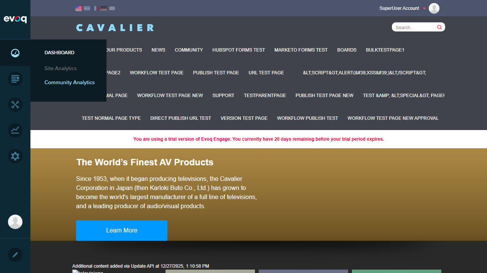

Test Summary
Description: Export analytics data to various formats for external analysis
Testing Depth: SMOKE testing - Verify feature loads and basic functionality works
OVERALL STATUS: FAIL
Root Cause: Community Analytics dashboard fails to load due to JavaScript error, preventing access to Export functionality.
Test Results
Test 1: Access Community Analytics Dashboard
FAIL
Steps Taken:
- Logged in as SuperUser (host/Pass123456)
- Navigated to PersonaBar > Dashboard
- Hovered over Dashboard to reveal submenu
- Clicked on "Community Analytics"
Expected Result: Community Analytics dashboard should load showing analytics data and Export button
Actual Result: Dashboard panel opens but displays blank white area. JavaScript error prevents loading.
JavaScript Error:
TypeError: utility.serializeCustomDate is not a function
Error Location:
social-dashboard-combined-instance.js:1025:39 at dashboardClass.init()
Screenshot - Dashboard Menu (Community Analytics visible):

Screenshot - Community Analytics Panel Failed to Load:

Test 2: Export to CSV Format
FAIL
Expected Action: Click Export button and select CSV format
Actual Result: Cannot test - Export button is not accessible because Community Analytics dashboard fails to load.
Issue: The Export button exists in the code (see code review below) but is not rendered in the UI due to the JavaScript error blocking dashboard initialization.
Test 3: Export to Excel Format
FAIL
Expected Action: Click Export button which calls Excel export API
Actual Result: Cannot test - Export button is not accessible because Community Analytics dashboard fails to load.
Issue: Code review shows the export function calls api/dnncorp/cmx/SpreadsheetExport/Excel but the UI cannot be accessed to trigger this functionality.
Test 4: Test Large Data Exports
FAIL
Expected Action: Export analytics data with large dataset
Actual Result: Cannot test - Community Analytics dashboard fails to load.
Test 5: Verify Data Completeness
FAIL
Expected Action: Verify exported data contains all expected fields
Actual Result: Cannot test - Community Analytics dashboard fails to load.
Test 6: Test Filename Generation
FAIL
Expected Action: Verify exported file has appropriate filename
Actual Result: Cannot test - Community Analytics dashboard fails to load.
Test 7: Validate Export Permissions
FAIL
Expected Action: Verify export respects user permissions
Actual Result: Cannot test - Community Analytics dashboard fails to load even for SuperUser account.
Observations
Code Review Findings
The Data Export functionality exists in the codebase:
1. Export Button in HTML (social-dashboard.html:13):
<a class="dashboard-export-btn" data-bind="click: exportDashboard, html: $root.resx.Export"></a>
2. Export Function in JavaScript (social-dashboard-instance.js:922-931):
var exportDashboard = function() {
var comparativeTerm = viewModel.period() == 'Custom' ? 'c' : viewModel.comparativeTerm();
var url = config.siteRoot + 'api/dnncorp/cmx/SpreadsheetExport/Excel?' +
$.param({
period: viewModel.period(),
startDate: viewModel.startDate(),
endDate: viewModel.endDate(),
comparativeTerm: comparativeTerm,
...
});
// Downloads Excel file
};
3. API Controller (CommunityAnalyticsController.cs):
The controller provides endpoints for dashboard data but the export is handled by a separate SpreadsheetExport API endpoint.
Root Cause Analysis
The Community Analytics dashboard fails to initialize due to a missing or incompatible utility function:
- Error occurs at
utility.serializeCustomDate() which is called during dashboard initialization
- This function appears to be expected in a shared utility library but is not defined or not loaded properly
- The error prevents all Community Analytics functionality including the Export feature
Recommendations
- Bug Fix Required: Investigate why
utility.serializeCustomDate is undefined - this may be a missing dependency or version mismatch
- Check if the utility script is being loaded correctly in the PersonaBar module bundle
- Once the dashboard loads, the Export functionality can be tested
Environment Notes
- Testing performed on Evoq Engage Trial (20 days remaining)
- Google Analytics connector not configured (warning displayed)
- The JavaScript error occurs regardless of Analytics configuration
Conclusion
All Data Export Functionality tests FAIL due to a critical JavaScript error that prevents the Community Analytics dashboard from loading. The export functionality code exists and appears properly implemented, but cannot be tested or used until the underlying dashboard initialization bug is resolved.
Blocker Issue: TypeError: utility.serializeCustomDate is not a function